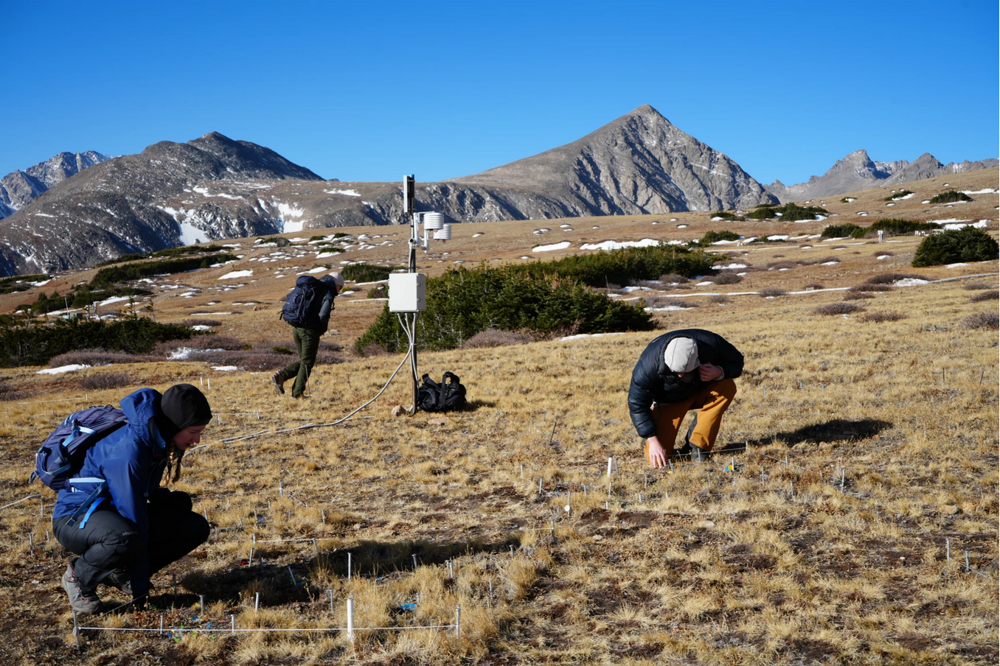

Niwot Ridge LTER, Emery Lab, and Miles’ work featured on NPR

Last week, I joined my advisor, Nancy Emery, along with my labmate Katie Bardsley, and NPR journalist Isabella Escobedo on a trip up to our field experiment at the Niwot Ridge LTER to talk about our work on alpine plant responses to a changing environment.
In 2024, we established a Turf Transplant Experiment (which is now one in a global network of coordinated Turf Transplant Experiments). Using 512 0.25 \(\times\) 0.25 m subplots in 80 plots across four carefully chosen sites, a third were transplanted to a paired site (from Cold to Warm or Warm to Cold), another third were transplanted within-site, and the final third are untreated control subplots.
My labmate labmate Katie and I are tracking the phenology, demography, and fitness of more than a 1000 individually marked plants of the species Bistorta bistortoides and Bistorta vivipara. These two closely related species have very different life histories and understanding their sensitivites to environmental change will help scientists build a predictive framework for vegetation change in high elevation ecosystems (i.e. when and why do we expect a species to shift it’s vegetative or reproductive phenology in response to the environment). Vegetation composition and phenology are important controls on water and energy cycles in alpine ecosystems which provide resources for humans and agriculture for billions of people worldwide.
Check out Isabella’s article at kunc.org here. Thumbnail image Copyright Isabella Escobedo / KUNC.